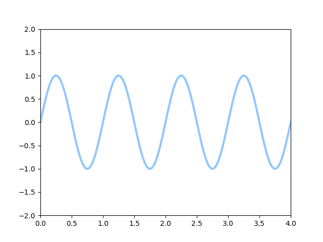

import numpy as np
from matplotlib import pyplot as plt
from matplotlib.animation import FuncAnimation
plt.style.use('seaborn-pastel')
fig = plt.figure()
ax = plt.axes(xlim=(0, 4), ylim=(-2, 2))
line, = ax.plot([], [], lw=3)
def init():
line.set_data([], [])
return line,
def animate(i):
x = np.linspace(0, 4, 1000)
y = np.sin(2 * np.pi * (x - 0.01 * i))
line.set_data(x, y)
return line,
anim = FuncAnimation(fig, animate, init_func=init,
frames=200, interval=20, blit=True)
anim.save('sine_wave.gif', writer='imagemagick')
Piemērs ar PHP koda attēlošanu.
<?php
echo "Hello, world!\n";
?>
Piemērs no HTML5 specifikācijas
You are in an open field west of a big white house with a boarded front door. There is a small mailbox here. > open mailbox Opening the mailbox reveals: A leaflet. >